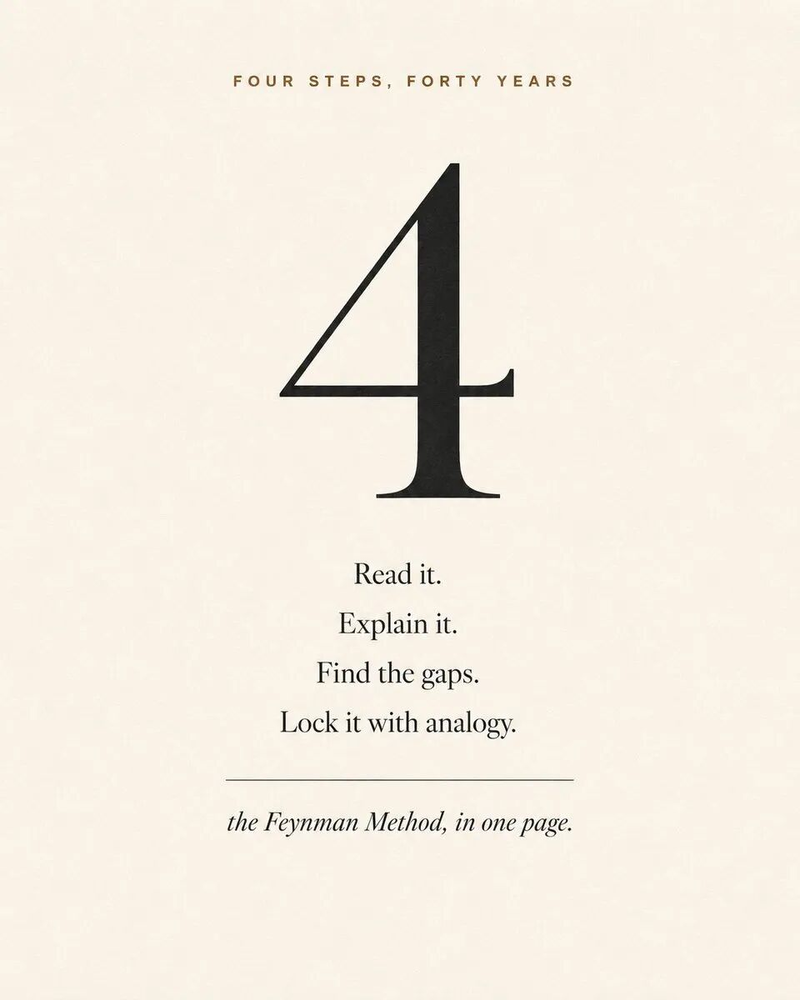
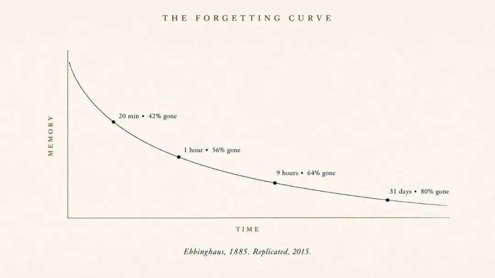
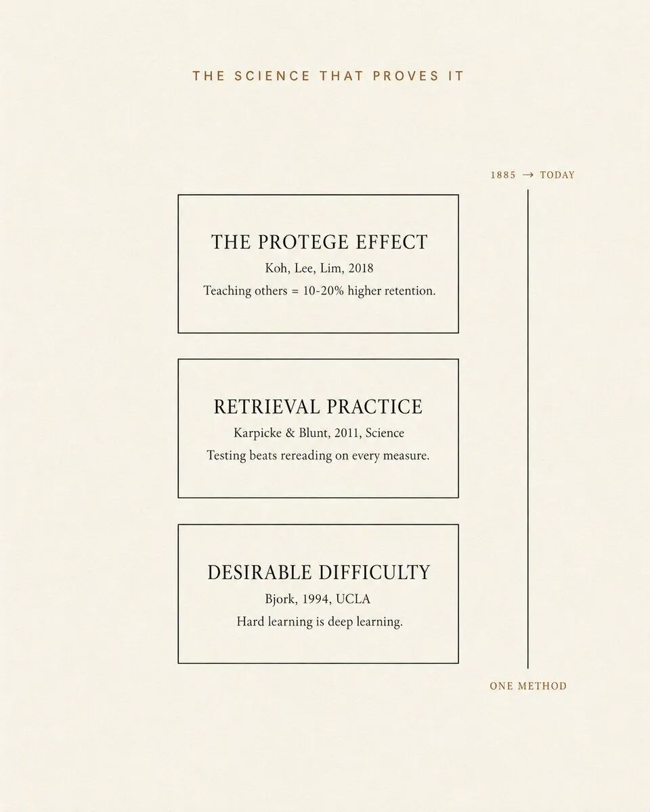
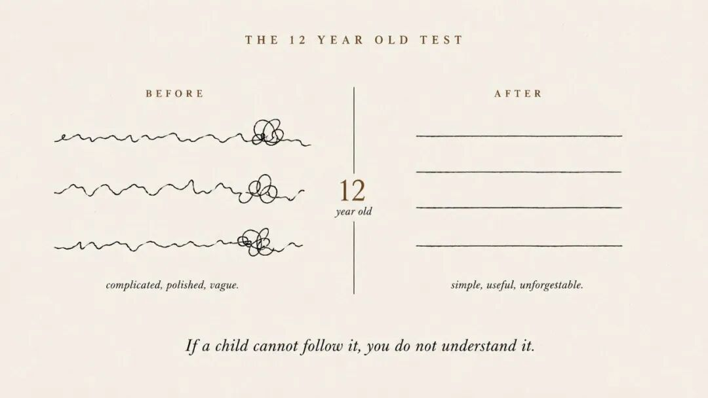
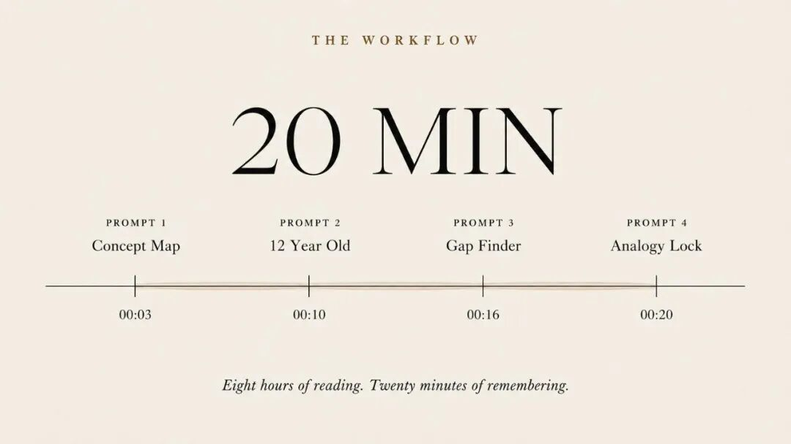

你是否有这种感觉，当你读完一本好书，两周之后却连书中任何一个章节都想不起来。这不是因为你笨，而是从来没有人教过你真正高效的学习方法。建议收藏本文。
理查德・费曼在 1965 年斩获诺贝尔物理学奖。但让他被世人铭记的并非他在物理学上的成就，而是他在加州理工学院使用的一套四步学习法。这套方法简单到 12 岁的孩子都能上手操作，威力却十分强大，在他离世 38 年后，麻省理工学院、斯坦福大学、加州大学洛杉矶分校至今仍在授课讲解。
几乎没人知道，你可以在（Claude）里用同样这四个步骤，只花 20 分钟完成深度学习。这就是解决学完就忘的全套方案：四段提示词、二十分钟，让知识真正牢牢记住。下面是完整的实操方法。

第一部分：你为什么总会遗忘学到的一切
你昨天读过一篇文章，现在能讲清楚文章的内容吗？不是只说个大概主题，而是文章真正的核心观点。
大多数人都做不到。整篇文章里最重要的一句话就是：不是你不擅长学习，你的大脑只是在遵循大脑的本能运行而已。
1885 年，德国心理学家赫尔曼・艾宾浩斯开展了人类首个关于记忆的科学研究。他背诵无意义音节词表，在不同时间段测试自己的记忆情况。他发现的遗忘曲线，如今是心理学领域被重复验证次数最多的研究结论之一，2015 年的一项重复实验再次证实了该结论的准确性。
20 分钟后，你会遗忘大约 42% 的内容
1 小时后，你会遗忘大约 56% 的内容
31 天之后，你最多会忘掉 80% 的内容
这就是遗忘曲线，几乎适用于所有类型的学习：读书、网课、讲座、网上文章。如果不进行主动巩固，你读过的大部分内容，一个月之内就会彻底忘记。
遗忘背后更深层的原因，被认知科学家称为流畅错觉：阅读过程轻松顺畅，大脑就会误以为自己真正理解了知识。一段通俗易懂的文字，会让你产生掌握知识的错觉，但这仅仅只是 “眼熟识别”。你只是见过这个观点，并没有真正去运用它。
能集中注意力把文章读完，只能证明你认真看了；可以把内容讲解清楚，才能证明你真正理解了。这二者完全不是一回事。

第二部分：费曼学习法的真正内核
1950 年直至 1988 年离世，理查德・费曼一直在加州理工学院任教。他的课堂极具魅力，其他名校的科学家会专程坐飞机赶来，只为听他讲解那些自己早已熟知的知识。
原因很简单：费曼从不会用晦涩的专业术语故作高深。他认为，如果没办法把一个概念给 12 岁的孩子讲明白，就说明自己根本没有吃透这个知识点。于是他会不断拆解概念，直到能用通俗的语言讲透彻。
有一段很少有人知晓的往事：当年在普林斯顿大学准备资格考试时，费曼拿出一个全新的笔记本，在扉页写下：《我尚未弄懂的知识点笔记》。之后他逐一攻克每一个知识盲区。他不去复习自己已经学会的内容，只钻研那些自己没办法通俗讲明白的知识点。
这本笔记本，就是最纯粹版本的费曼学习法：找到知识漏洞、补齐漏洞、接着攻克下一个漏洞。
在他去世之后，他的学生把这套方法整理为四个步骤，此后多年一直被科研人员研究验证：
第一步：选定一个知识点，写在空白的纸上。
第二步：假装给一名 12 岁的孩子讲课，只用大白话讲解，严禁使用专业术语。
第三步：找出你讲解过程中所有模糊、卡壳的漏洞，全部标记出来。
第四步：回到原始学习资料补齐知识漏洞，再用类比的方式简化知识点重新讲解。
四个步骤，每一步都在强迫大脑完成单纯阅读永远做不到的事：主动调取记忆检索信息。
第三部分：证明这套方法有效的科学原理
费曼从未发表过关于这套学习方法的学术论文，他只是一直在亲身使用。但过去 60 年的认知科学研究，已经清晰解释了这套方法起效的底层逻辑：
教学效应（学徒效应）：Koh、Lee、Lim三位学者在 2018 年的研究表明：向他人讲解知识点的学生，成绩比只埋头自学的学生高出 10%~20%。讲解的过程会倒逼大脑主动检索记忆，而记忆检索正是强化记忆的核心。下文的第 1、第 4 条提示词，就能激活这一效应。
检索式练习：卡尔皮克与布朗特在 2011 年于《科学》期刊发表研究证实：主动从大脑里调取信息，学习效果远胜于反复翻看资料。自我检测在所有测评维度上，都完胜单纯重读。第 2、3 条提示词，就是用来强制你完成记忆检索。
良性困难效应：加州大学洛杉矶分校的罗伯特・比约克在 1994 年提出这个概念：学起来毫不费力的内容，只会形成浅层理解；学习过程中感受到吃力，才能实现深度学习。当你费力组织语言输出自己的讲解内容时，这种煎熬并不是学习失败，恰恰是大脑在搭建更牢固的神经连接。
以上就是这套学习法全部的科学理论支撑：讲授优于自学、检索优于重读、适度的学习难度优于轻松的浏览。早在相关科学数据出现的 40 年前，费曼就悟透了这些规律。
下面四条提示词，可以在一场 20 分钟的学习训练里，同时叠加以上三种科学学习效应。

第四部分-提示词 1：绘制概念思维导图
把下面这段文字粘贴到 Claude 中，将括号里的内容替换成你学习的主题即可。我刚刚学习了【主题】相关内容。我准备使用费曼学习法巩固所学知识，避免遗忘。第一步：梳理核心概念。请列出这个主题下我必须完全吃透的 5 个核心观点。针对每一个观点，请提供：
I just finished reading about [TOPIC].I want to run the Feynman Method to make sure it sticks.Step 1: Concept Map.List the 5 most important ideas from this topic that Ishould fully understand.For each idea, give me:- The 1 sentence definition in simple English- Why this idea matters in the real world- The 1 question I should be able to answer if I trulyunderstand itDo not use jargon. Do not assume I have a background inthis field. Write like you are talking to a smart 16year old.
执行后你会得到条理清晰的五大核心知识点。一个知识点往往包含几十条零散信息，但真正起到支撑作用的核心内容只有 5 个，这条提示词仅需 30 秒就能筛选出来。
很多人读完一本书，只模糊觉得 “这本书很不错”；用这条提示词梳理后，你可以清晰口头说出 5 个核心知识点。这就是模糊的阅读感受，和牢固记忆之间的差距。
第五部分-提示词 2：十二岁知识易懂测试
接下来是最关键的一步，这条提示词可以激活教学效应。
For each of the 5 ideas above, I am going to try toexplain it in my own words like I am teaching a 12 yearold.But first, write me a model answer for each idea. Useonly words a 12 year old would understand. No jargon.Use an everyday example for each one.Format:IDEA 1: [name]12 year old version: [your explanation]Everyday example: [your example]Then ask me to write my own version of each. Wait formy answers before continuing.
发送指令后，Claude 会先给出通俗的示范内容，然后暂停对话等待你输入自己的解读。你需要用大白话，逐条写下自己对知识点的理解。
真正的学习，就发生在你手动输出自己理解的这一刻，不是你看书的时候、不是你划线标记的时候、不是你摘抄笔记的时候，而是你用自己通俗的语言重构知识的瞬间。
如果跳过这一步，一个月后你大概率会遗忘 80% 的内容；认真完成这一步，绝大多数知识点你可以牢牢记住很多年。这不是主观猜测，而是科团队 2018 年实验得出的结论。
Reading is proof of attention. Explaining is proof of understanding
阅读只能证明你投入了注意力，能讲清楚才代表你真正学懂了。写完你的理解内容发送给 AI，就可以使用下一条提示词。

第六部分-提示词 3：知识漏洞排查
这是费曼学习法最精髓的一步：Claude 会通读你的讲解内容，精准找出你理解出错、模糊的地方。
Here are my 5 explanations:[PASTE YOUR ANSWERS]Now play the role of a strict but kind tutor.For each of my 5 explanations:1. Mark it as STRONG, WEAK, or WRONG.2. If it is WEAK or WRONG, tell me exactly what I gotconfused about. Be specific. Do not be polite. Iwant to know.3. Give me the corrected version in 12 year old words,using a DIFFERENT analogy from before.4. Ask me 1 follow up question that would prove I nowunderstand it.End with: which 1 idea should I restudy first to fixthe biggest weak spot.
最后请告诉我：优先重新学习哪一个知识点，能最高效补齐我最大的学习短板。
最终你会得到一份客观的个人学习测评报告。这是书本永远无法实现的功能：书籍不知道你哪里理解错了，但 AI 可以。AI 读完你的表述后，能精准定位你逻辑断裂、认知出错的地方。
我曾用这套方法复盘物理、金融、人工智能、谈判技巧等各类内容，每一次 AI 都至少找出两个我自以为学会、实则一知半解的知识点。
最后推荐优先复盘的知识点极具价值：你不需要重读整本书，只需要回看一小段原文，就能补齐最关键的知识漏洞。
第七部分-提示词 4：类比记忆固化
原版费曼四步法里的第四步最容易被人忽略：用你熟悉的生活经历做类比，绑定知识点。当新知识和你已知的生活经验挂钩，大脑的记忆留存时长会提升三倍。
For each of the 5 ideas, build me 2 analogies:ANALOGY 1: from everyday life(cooking, driving, sports, weather, family, money)ANALOGY 2: from common adult experience(working a job, using a phone, dealing with money,managing time)For each analogy:- Show where the analogy works- Show exactly where the analogy breaks down(this part is critical, all analogies break somewhere)End with the 1 sentence summary I should write down andre-read tomorrow morning.
执行后每个知识点都会绑定两个记忆锚点，外加一句可以长期保存的总结话术。
点明类比的局限性，是这条提示词的点睛之处。普通老师往往只给出类比就结束讲解，但费曼坚持讲明类比的适用边界，避免你带着片面错误的认知继续学习。
第二天早上重读五条总结话术时，搭配两组生活类比，完整的知识点就会瞬间在脑海中重现，实现永久记忆锁定。

第八部分：20 分钟完整学习流程
第 1–3 分钟：使用第一条提示词，梳理出 5 个核心知识点。第 4–10 分钟：使用第二条提示词，阅读 AI 的示范讲解，再手动写下自己的理解。这一步不要着急，手动输入才是深度学习的关键。第 11–16 分钟：使用第三条提示词，获取你的学习漏洞报告，针对最薄弱的知识点花两分钟回看原文查漏补缺。第 17–20 分钟：使用第四条提示词，用两组类比绑定知识点，保存好五条总结话术方便后续复习。
单个主题总耗时仅 20 分钟，四次主动记忆检索训练，学习效果远超大多数人上完一整门线上课程的收获。
对比一下低效的学习方式：花 8 小时读完一本 300 页的书，最后遗忘 80% 内容；花 成千上万购买线上课程，下个季度大部分知识点就全部遗忘。
借助 Claude 落地费曼学习法，可以把 8 小时的被动阅读，转化为能长久记住的 8 小时高效学习。
第九部分：7 个可以立刻使用这套方法的场景
读完每一本非虚构类书籍：读完当天就用四段提示词复盘，知识可以长久牢记。
学完每一节线上课程：大多数付费网课学完后八成内容都会被遗忘，每节课看完第二天就使用费曼法复盘。
面试前备考：梳理面试高频的 5 个难点知识点，逐一用该方法深度学习，你的表达逻辑清晰度会远超其他求职者。
开会前准备：如果领导提到了你似懂非懂的专业概念，前一晚用这套方法吃透，第二天你就可以给团队清晰讲解。
准备对内 / 对外分享前：需要在工作中做知识分享时，先用这套方法打磨内容，听众会觉得你的从业经验远超实际年限。
读完专业论文后：学术论文晦涩难懂，在 Claude 里使用费曼法，是吃透论文最高效的方式。
研究行业竞品高频专业术语时：比如容器编排、检索增强生成、模型微调、多协议客户端等你只点头附和却没有吃透的概念，花 20 分钟深度学习，彻底掌握不再一知半解。
写给你的心里话
你习惯于买书、报网课、认真听完每一场讲座，可学完没多久就全部遗忘。这不是因为你懒惰，而是整个知识付费行业的设计初衷从来不是帮你巩固记忆，只是为了卖出产品。
你想要牢牢记住学到的内容，希望付费的课程、买来的书籍可以给自己带来价值，这套学习方法就是为你量身打造的。
如果你也是这样，建议收藏本文，用好这四段提示词，从现在开始让你的大脑真正留住每一份知识。
扎心的真相
很少有人愿意告诉你：图书行业卖给你的是书籍，课程行业卖给你的是网课，笔记软件卖给你的是会员订阅，但没有任何一款产品在帮你做一件事：主动记忆检索。
费曼学习法已经免费公开 40 年，支撑这套方法的相关科研结论，十多年前就已经被学界证实。你付费使用的 AI 工具 Claude，就能运行这四段提示词，可真正用好的人寥寥无几。
未来 18 个月会迎来学习能力的分水岭：学会用 AI 做主动记忆检索的人，会远远甩开只会用 AI 一键总结内容的人。不是前者智商更高，而是他们愿意手动输出自己的理解，其他人只会被动划线、一键摘要。
18 个月后，几乎所有阅读类软件都会内置这套学习流程，这份学习优势将不复存在。而当下，它依旧是少数人掌握的高效学习秘诀。
停止被动信息输入，开始主动输出讲解。挑选下一个你想要牢牢掌握的知识，打开 Claude，粘贴第一条提示词。二十分钟之后，你就会真正明白：阅读，从来不等于学习。
这四个提示词我总结成了skill只需要把这个链接发送给你的AI让它安装这个skill即可。https://github.com/Xww-coder/feynman-learning-skill。